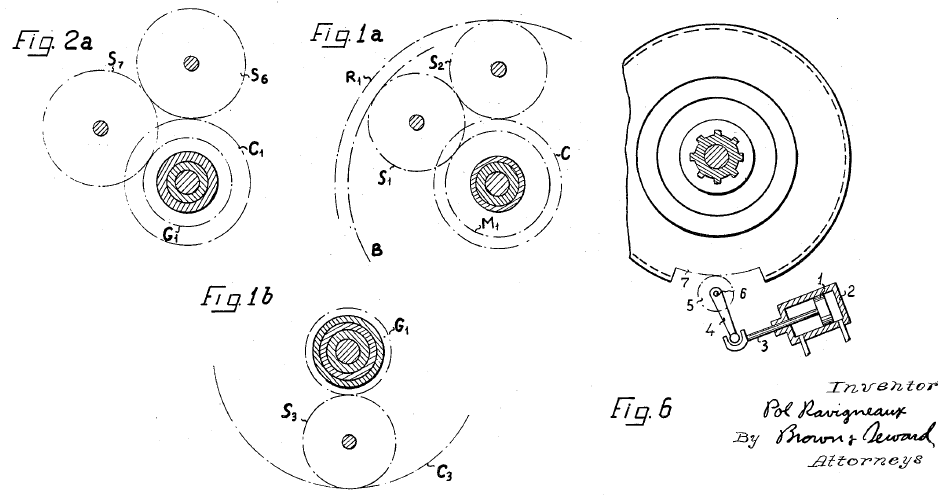
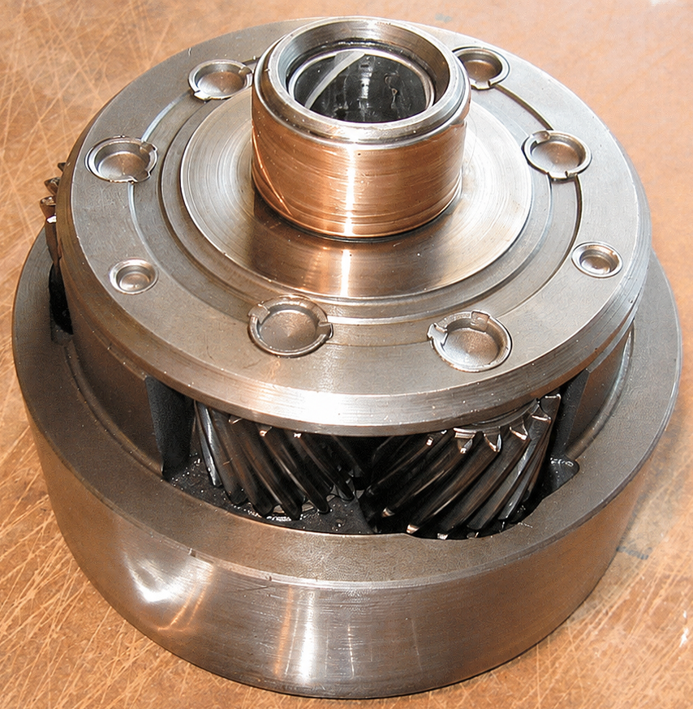
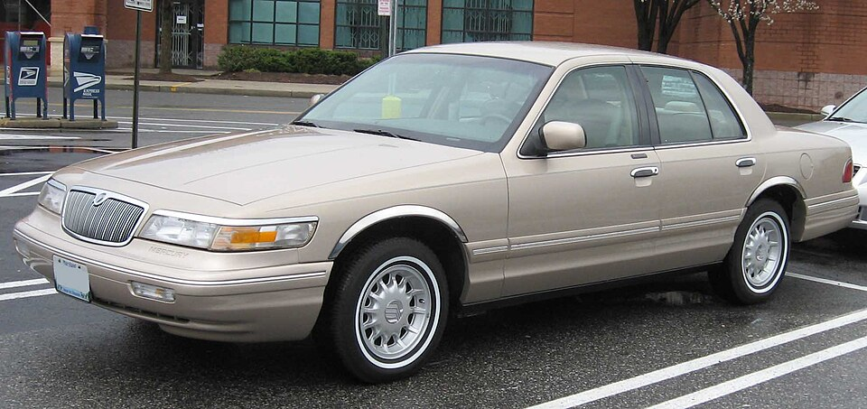
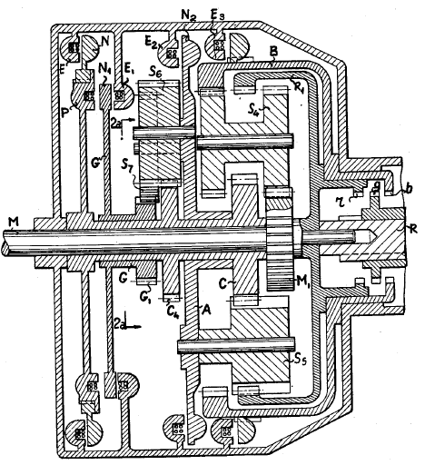

Este artigo mostra como montar no Engrenarium um modelo didático de transmissão Ravigneaux e como interpretar suas relações de marcha. A leitura é focada nos dentes do conjunto, nas condições de travamento ou acoplamento e no motivo pelo qual esse arranjo é útil em transmissões automáticas compactas.
O que é um conjunto Ravigneaux
O conjunto planetário Ravigneaux foi patenteado em 1949 por Pol Ravigneaux. Ele reúne duas engrenagens solares, planetas longos e curtos, uma engrenagem interna e um único porta-planetas, funcionando como se dois sistemas planetários fossem combinados em uma única estrutura.


Aplicação em transmissões Ford
Transmissões automáticas overdrive da Ford usaram conjunto Ravigneaux. O modelo 4R70W apareceu em vários veículos, entre eles:
- Ford Explorer, de 1996 a 2001;
- Ford F-Series, de 1993 a 2003;
- Lincoln Town Car, de 1993 a 2004;
- Mercury Grand Marquis, de 1995 a 2004;
- Ford Expedition, de 1997 a 2004.

Relações de marcha
A transmissão 4R70W pode ser representada por cinco relações: quatro marchas à frente e uma marcha ré.
| Condição | Relação indicada |
|---|---|
| 1ª marcha | \(2,84\) |
| 2ª marcha | \(1,55\) |
| 3ª marcha | \(1,0\) |
| 4ª marcha | \(0,7\) |
| Marcha ré | \(-2,32\) |
As relações acima são escritas como razão entre velocidade angular de entrada e velocidade angular de saída. Relações maiores que \(1\) indicam redução; a relação \(1,0\) indica marcha direta; e a relação \(0,7\) indica overdrive, em que a saída gira mais rápido que a entrada. O sinal negativo da ré indica inversão de sentido.
Dados para montagem no Engrenarium
A descrição do vídeo informa os números de dentes usados para montar o modelo. O ponto importante é que os dois subsistemas compartilham a mesma anelar de \(88\) dentes, característica que ajuda a compactar o conjunto Ravigneaux.
| Subsistema | Solar | Planetas | Anelar |
|---|---|---|---|
| Planetária 1 | \(N_{sun}=31\) | \(N_{planet\,1}=24\), \(N_{planet\,2}=25\) | \(N_{ring}=88\) |
| Planetária 2 | \(N_{sun}=38\) | \(N_{planet}=25\) | \(N_{ring}=88\) |
No Engrenarium, esses dados devem ser usados para criar os dois trens combinados. Depois disso, mantenha o porta-planetas comum e a anelar de saída, mudando apenas as condições de contorno de cada marcha.

Montagem das marchas
Com a geometria definida, cada marcha é obtida por uma configuração de vínculos. A análise abaixo usa a mesma saída na anelar e alterna entrada, travamentos e acoplamentos para reproduzir redução, marcha direta, overdrive e ré.
1ª marcha
Na primeira marcha, configure a entrada na primeira solar e a saída na segunda anelar:
A condição de contorno é o travamento do primeiro porta-planetas:
Com o porta-planetas parado, o conjunto trabalha como uma redução forte. Essa é a condição adequada para arrancada, quando se deseja maior multiplicação de torque e menor velocidade de saída.
2ª marcha
Na segunda marcha, a relação ainda é lida entre a primeira solar e a segunda anelar:
A condição que muda é o travamento da segunda solar:
Essa alteração reduz a relação em comparação com a primeira marcha. A saída passa a girar mais rapidamente para a mesma velocidade de entrada, mas ainda com redução.
3ª marcha
A terceira marcha é a marcha direta. A mesma razão cinemática é usada, mas agora com acoplamento entre as duas solares:
Quando os elementos relevantes giram solidários, o trem deixa de produzir redução interna e a relação efetiva se aproxima de \(1:1\).
4ª marcha
Na quarta marcha, a entrada considerada passa pelo porta-planetas e a saída continua na anelar:
A condição aplicada novamente é o travamento da segunda solar:
Como \(i_4 < 1\), esta é uma relação overdrive. A saída gira mais rápido que a entrada, condição útil para reduzir rotação do motor em velocidade de cruzeiro.
Marcha ré
Na marcha ré, a relação é escrita entre a segunda solar e a segunda anelar:
Para inverter o sentido da saída, mantém-se o travamento do primeiro porta-planetas:
O sinal negativo indica inversão de sentido. Assim, a ré não é apenas uma relação de grande redução; ela é uma condição cinemática que faz a saída girar no sentido oposto.
Como interpretar o conjunto
O Ravigneaux é eficiente como objeto de estudo porque concentra várias relações em um único pacote de engrenagens. Em cada marcha, a transmissão seleciona quais elementos ficam travados, quais são acoplados e quais servem como entrada ou saída.
O roteiro de leitura é o mesmo usado em outros trens planetários:
- identificar a entrada e a saída da marcha;
- marcar quais elementos estão fixos, como solares ou porta-planetas;
- verificar se há acoplamento entre elementos, como solares solidárias;
- calcular a razão \(\omega_{in}/\omega_{out}\);
- interpretar o módulo como redução ou overdrive e o sinal como sentido de rotação.
Essa abordagem evita tratar cada marcha como um caso isolado. O que muda de uma marcha para outra é o conjunto de restrições aplicado ao mesmo mecanismo.